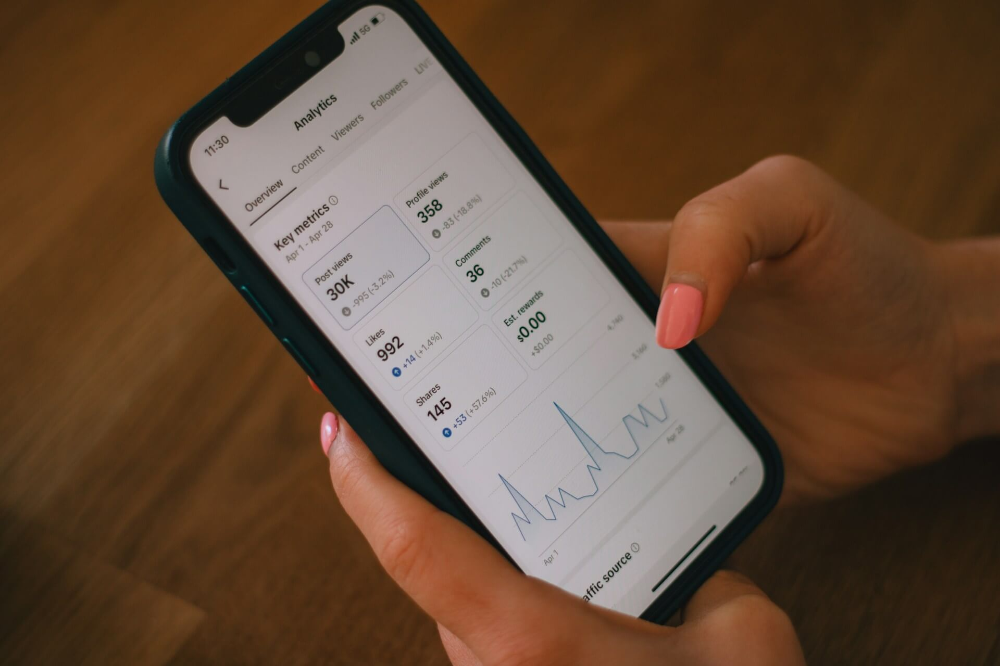
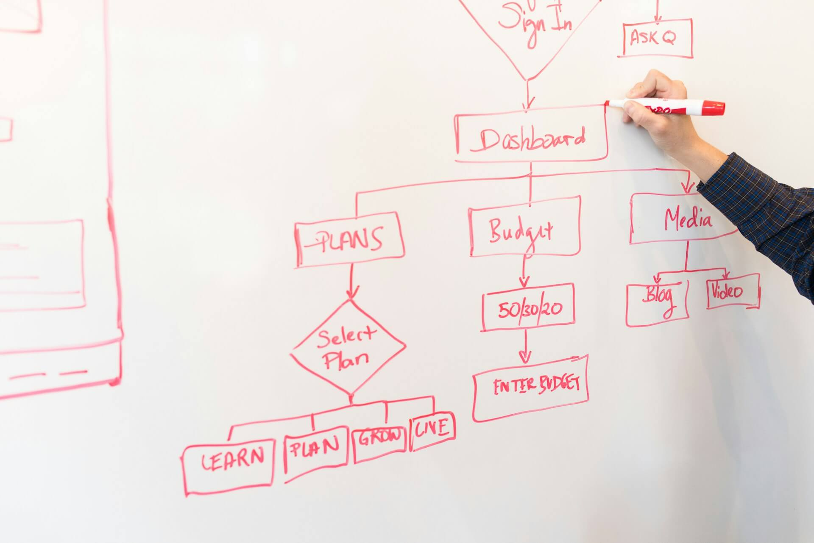

You post consistently. Your engagement looks decent. People comment, some follow, a few save your posts. And still, every month, the number of actual paying clients that come from social media is close to zero.
You post consistently. Your engagement looks decent. People comment, some follow, a few save your posts. And still, every month, the number of actual paying clients that come from social media is close to zero.
This is the most common marketing frustration small business owners have in 2026, and the reason is almost never what they think it is. It isn't that your content is bad. It isn't that you need to post more. It isn't that you haven't found the right niche or hook or trend.
The problem is that you're doing content without a funnel. Posting to the top of a funnel that has no middle and no bottom is like pouring water into a bucket with holes in it. It doesn't matter how much you pour. You need to fix the bucket first.
This post breaks down why social media alone doesn't convert, what a real funnel looks like for a small service business, and how to build one without becoming a full-time marketer.

The honest reason social media isn't working
Let's ground this with data that most entrepreneurs don't see. 4% is the average organic reach for a Facebook business post. That means out of every 100 followers, fewer than 4 actually see what you post. Instagram is slightly better but follows the same pattern. Reach has been declining for years because platforms want you to pay for ads, not get free distribution.
Now add this: 0% is how much of your social media audience you actually own. If Meta suspends your account tomorrow (which happens more often than you'd think), you lose every follower, every saved post, every conversation. The platform is rented land. You do not own your audience, no matter how many followers you have.
And then there's the structural issue. Social media is a discovery channel. It's designed to introduce people to you. It was never designed to close sales. A post can make someone aware you exist. It can build familiarity. It can even create mild interest. But the decision to actually hire you, buy from you, or book a call with you happens in a completely different environment. That environment is your funnel, and most small businesses don't have one.
What a funnel actually is (without the marketing jargon)
A funnel is a structured path that takes a stranger from "I have no idea who you are" to "I just paid you." Every profitable service business has one, even when the owner doesn't call it that. When it works, it works because each step has a specific job.
There are three stages, and understanding them changes how you think about every piece of content you make.
Top of funnel (awareness). This is where strangers find you. Social media posts, blog posts that rank on Google, podcast appearances, referrals, ads. The job of top-of-funnel content is one thing: make the right people aware you exist. Not to sell. Not to close. Just to create awareness.
Middle of funnel (nurture). This is where a stranger becomes a warmer prospect. They subscribe to your email list, download a free resource, follow your content closely, consume your best work over time. The job here is to build trust and position you as the obvious choice. This is where most small businesses completely fail, because they have no middle of funnel at all.
Bottom of funnel (conversion). This is where a warm prospect becomes a paying client. A discovery call, a booking, a purchase. The job is to close. This is the part business owners focus on because it's where the money is, but it only works if the first two stages are doing their jobs upstream.
Social media lives at the top of the funnel. If that's all you have, you're asking a discovery channel to do the work of a conversion channel, and it's not built for that. No amount of content strategy will fix a missing middle and bottom.

What most small businesses are doing wrong
The typical pattern looks like this. A business owner posts on Instagram three times a week. The posts are decent. Some get likes. Once in a while someone DMs asking about services. The owner responds, maybe gets on a call, maybe closes the sale.
That's not a funnel. That's accidental conversion. It works occasionally but it doesn't scale, and most months it produces nothing. Here's what's missing.
No way to capture interest. Someone sees a post they like. What happens next? If the answer is "they follow me and hopefully see my next post," you're at the mercy of the algorithm. If there's no way for them to opt into ongoing communication with you (email list, free resource, nurture sequence), you've lost them.
No positioning content. Your content is all top-of-funnel tips, trends, and quick wins. There's nothing that positions you as the obvious hire for a specific problem. A stranger who follows you for a year still doesn't have a clear sense of why they should pick you over the other 20 people in your space.
No clear conversion path. Someone decides they want to hire you. What do they do? Can they see your services clearly? Is pricing guidance visible? Is booking a call one click away? Or do they have to DM you, wait for a response, bounce between messages, and eventually give up?
67% more leads generated monthly by businesses with active blogs compared to businesses without. That stat isn't about blogging specifically. It's about what blogging represents: middle-of-funnel content that lives on owned property, captures interest from search, and feeds a funnel that closes.
Building a funnel for a small service business
You don't need enterprise marketing software or a seven-person team to build a real funnel. You need four pieces working together. If building this out feels like a lot to tackle alone, this is exactly the kind of infrastructure our digital marketing team builds for small service businesses.
1. Owned content on your website
Your blog, your service pages, your case studies. This is the content that lives on property you own, ranks on Google over time, and does the work of positioning even while you sleep. Each piece of owned content should do three things: rank for a specific search term your ideal client uses, answer a real question, and create a natural next step.
Blog posts are the most common version of this, but case studies work harder for service businesses. A well-written case study that shows how you solved a specific problem for a specific client converts at 3 to 5 times the rate of a generic blog post.
2. A lead magnet worth opting in for
This is what turns a stranger into a contact you actually own. A free resource, a checklist, a template, a short guide, a mini-course. Not "subscribe to my newsletter," which almost nobody does in 2026 unless you're already famous. Something specific, valuable, and worth an email address.
Good lead magnets are narrow and immediately useful. "The 5-page brand strategy template we use with every new client" works. "Our newsletter" doesn't. The lead magnet should be genuinely helpful on its own, not a teaser that makes people feel tricked.
3. A nurture sequence that builds trust
Once someone subscribes, what happens next? Most small businesses do nothing, which is the equivalent of getting a phone number and never calling. A simple nurture sequence is 4 to 7 automated emails delivered over a few weeks that continue to build the relationship, share your best thinking, and gradually introduce the idea of working with you.
This isn't about hard selling. It's about being present in their inbox consistently enough that when they're ready to solve the problem you solve, you're the first person they think of. Tools like MailerLite, ConvertKit, or Beehiiv make this simple to set up and run forever.
4. A clear conversion point
When someone is ready to hire you, the path should be obvious and easy. A booking link, a pricing page, a service page with a clear next step. Not a contact form that goes into a black hole. Not "DM me for rates." An actual process that a prospect can follow without friction.
For most small service businesses, the ideal conversion point is a booking link for a discovery call. 15 to 30 minutes, free, no pressure. The call does what social media can't: it builds real connection and lets you actually close.
How social media fits into this
Social media isn't useless. It just has a specific job that most small businesses are asking too much of. Here's how it should work inside a real funnel.
Use social media to drive traffic to owned content. Every post should have a reason to click through to your site. Not every single post, but most of them. If someone only ever sees your Instagram and never leaves the platform, you're not building an asset, you're entertaining people.
Use social media to promote your lead magnet. Pin a post about your free resource. Link to it in bio. Mention it in captions. The goal of social media is not to get followers, it's to move the right followers off social and onto your email list.
Use social media for bottom-of-funnel social proof. Testimonials, case study snippets, client wins. These aren't meant to attract new followers. They're meant to reassure warm prospects who are already considering hiring you and stalking your grid to see if you're legit.
The shift in thinking is this: stop asking social media to close sales. Ask it to feed your funnel. Judge its performance by email signups, traffic to your site, and calls booked, not by likes or follower growth.
The timeline you can actually expect
Funnels work, but they don't work overnight. Here's a realistic timeline for a small service business that starts from zero.
Months 1 to 2: Build the infrastructure. Set up email platform, create lead magnet, write a nurture sequence, set up booking link, publish the first 3 to 5 pieces of owned content. No new clients from this yet.
Months 3 to 6: Consistent publishing. You should start seeing steady email signups and the first clients who came through the funnel. SEO traffic is still low but growing. Social media is driving traffic but not closing deals alone.
Months 6 to 12: The compounding kicks in. Your blog posts start ranking. Your email list hits a size where consistent revenue comes from it. Your case studies start closing prospects who found you through search. You spend less time chasing and more time fulfilling.
Year 2 and beyond: The funnel becomes your primary client source. Social media becomes a supporting channel rather than the main one. You have an asset that generates leads whether you posted today or not.
The mistake most small business owners make is abandoning the funnel strategy in month 2 because nothing is happening yet. Funnels compound. The work you do in month 1 pays off in month 9. If you stop and start, you never compound anything.
Frequently asked questions
How many followers do I need before social media converts?
Follower count matters less than you'd think. A 500-follower account with a tight funnel converts better than a 50,000-follower account with none. Focus on building the funnel, not the follower count.
Do I need to be on every platform?
No. Pick one or two platforms where your ideal client actually spends time. Go deep, not wide. A business that posts on Instagram, TikTok, LinkedIn, YouTube, and Twitter is usually half-present on all five. Pick two, do them well, ignore the rest.
What's the best lead magnet for a service business?
Something narrow, immediately useful, and related to the service you sell. Templates, checklists, short guides, and audits all work well. Avoid anything vague like "5 tips" or "beginner's guide." Specificity converts.
How often should I email my list?
Once a week is the standard for most small service businesses. Some do twice a month. Once a month is usually too infrequent to stay top of mind. More than twice a week starts to feel like spam unless your audience specifically expects high frequency.
How long should my nurture sequence be?
4 to 7 emails over 2 to 3 weeks is the sweet spot. The first email delivers the lead magnet. The next few share your best thinking, build trust, and gradually introduce the idea of working with you. The final email typically includes a direct call to action (book a call, explore services, respond with a question).
Can I outsource all of this?
Parts of it, yes. Email setup, nurture sequence writing, blog content, and funnel design can all be handled by someone else. The strategy, the voice, and the core insight about your business should come from you. Outsourcing the strategy usually produces generic funnels that sound like every other business.
Where to start
If you've been posting consistently for months without clients to show for it, the problem isn't your content. It's the missing infrastructure underneath it. A real funnel turns the same social media effort you're already putting in into actual revenue.
At Ismile Creative and Digital Solutions, we build funnels and digital marketing systems for small service businesses that want to stop relying on the algorithm. Lead magnets, email automation, content strategy, and the infrastructure to turn followers into clients.
Book a free call to talk through what your funnel should look like. We'll look at your current setup and map out what's missing.
Social media without a funnel is a full-time job for no paycheck. A funnel is the difference.
Stop relying on the algorithm to pay your bills
Book a free call and we'll look at your current setup and map out what's missing. Lead magnets, email automation, content strategy, and the infrastructure to turn followers into clients.
Book a Free Call